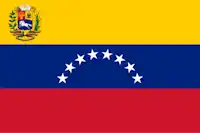

My name is Jose David Colmenarez, I am from Venezuela, I am married with my wonderful wife Andrea, I am
35 years old, I have 26 years of church membership, I served a mission of rule between the years 2011-2013, Mision Barcelona in Venezuela.
Currently I serve as an English Connect Instructor for missionaries. Being part of BYU has been a great way to establish solid foundations in my career. I am interested in developing with Frameworks such as Angular, and wish to develop skills such as creating Android / IOS apps.
Carabobo, Venezuela

Venezuela's geographical position grants it significant strategic advantages within the Americas. As a northern South American nation, it serves as a crucial gateway, facilitating connections between the continent and the world. Its proximity to the Panama Canal enhances access to Pacific trade routes. With an extensive Caribbean coastline and Atlantic access, Venezuela holds strategic maritime control, enabling trade with Europe and Africa. The nation's vast oil reserves and diverse mineral resources, including gold, iron, and bauxite, position it as a key player in global markets. Its rich biodiversity also offers potential for scientific research and biotechnological advancements. Furthermore, its location makes it vital for regional communication and transportation, fostering broad international trade relations.
